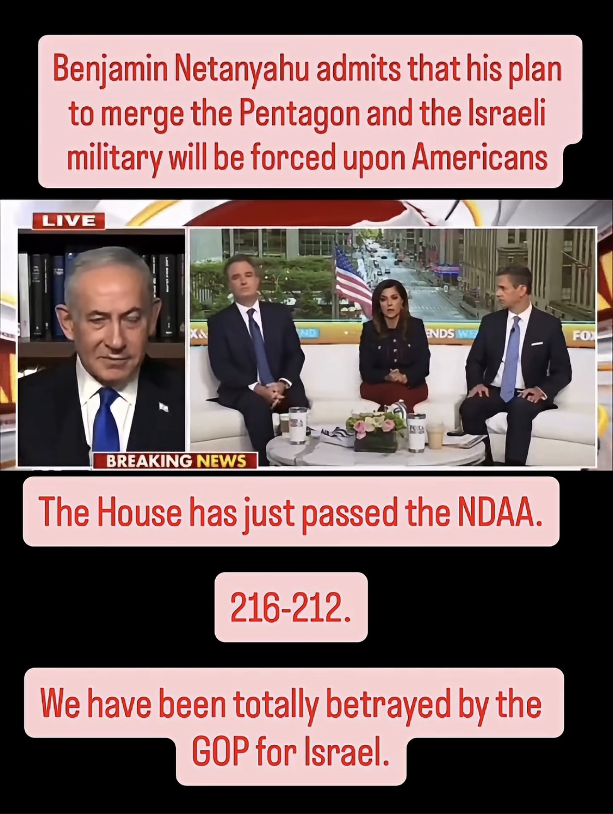

This provision merges U.S. and Israeli defense technology across AI, cyber, weapons, and supply chains. Netanyahu called it HIS idea. ***Here is the List of DEMOCRATS who VOTED YES: Don Davis, Jared Golden, Adam Gray, Vincente González, Maríe Perez *** The only Republican to VOTE NO was Thomas Massie. They're also pouring billions more into the endless war against Iran. This is handing over American military sovereignty. ***The US House has just PASSED the National Defense Authorization Act (NDAA) — with the SAVE AMERICA ACT ATTACHED — sending it to the Senate before it heads to President Trump's desk.***
Claims checked
The House passed the NDAA by a vote of 216-212.
The House passed H.R. 8800, the FY2027 NDAA, on July 22, 2026, 216-212 (Roll Call 278). The winning side was 209 Republicans, 6 Democrats, and 1 Independent (Kevin Kiley); the losing side was 205 Democrats and 7 Republicans.
The NDAA contains a provision merging U.S. and Israeli defense technology across AI, cyber, weapons, and supply chains.
Section 219 of the FY2027 NDAA creates the 'United States-Israel Defense Technology Cooperation Initiative,' directing the Pentagon to accelerate joint R&D, co-production, and industrial integration with Israel spanning AI, cyber, autonomous systems, missile/air defense, quantum, biotech, and supply chains. 'Merge' overstates it — the text describes integration/cooperation of defense technology and industry, not a merger of the two nations' armed forces.
Netanyahu admitted his plan to merge the Pentagon and the Israeli military, calling it his idea.
Netanyahu did refer to the initiative as 'my plan' and spoke of 'meshing' the two countries' talent in a Fox News interview, supporting 'his idea.' However, when asked directly about 'merging' the Pentagon and Israel's military he reframed it as going 'from aid to partnership,' not a merger of the militaries. The provision integrates defense technology and industry, not command structures, so the 'merge the Pentagon and the Israeli military' framing overstates both his remarks and Section 219.
Thomas Massie was the only Republican to vote NO on the NDAA.
Seven Republicans voted no, not one: Thomas Massie (KY), Josh Brecheen (OK), Tim Burchett (TN), Eli Crane (AZ), Harriet Hageman (WY), Anna Paulina Luna (FL), and Chip Roy (TX). The official roll call recorded 7 Republican nay votes.
The Democrats who voted YES were Don Davis, Jared Golden, Adam Gray, Vicente González, and Marie Perez.
All five named Democrats did vote yes, but the list is incomplete: six Democrats crossed over. The post omits Rep. Henry Cuellar (TX), who also voted yes.
The House passed the NDAA with the SAVE America Act attached, sending it to the Senate before it heads to President Trump's desk.
House Republicans attached the SAVE America Act (an election/voter-ID measure championed by Trump) to the FY2027 NDAA, which the House then passed. The bill now moves to the Senate, where it faces a likely filibuster fight. The post correctly frames it as going to the Senate next (not directly to Trump).
Interpretation (ungraded)
- We have been totally betrayed by the GOP for Israel.
- This is handing over American military sovereignty.
- Netanyahu's plan 'will be forced upon Americans.'
- They're also pouring billions more into the endless war against Iran.
What the sources establish
The post, from the Instagram account @thesidewalkschool2, reacts to the U.S. House passing the Fiscal Year 2027 National Defense Authorization Act (H.R. 8800) on July 22, 2026, by a vote of 216-212. The core factual scaffolding is real: the vote tally is accurate, the bill contains Section 219, the 'United States-Israel Defense Technology Cooperation Initiative,' which directs the Pentagon to accelerate joint research, co-production, and industrial integration with Israel across artificial intelligence, cyber, autonomous systems, and supply chains, and the SAVE America Act was attached to the bill, which now heads to the Senate.
Several specifics are correct but framed for effect. Netanyahu did call the initiative 'my plan' and spoke of 'meshing' the two countries' talent in a Fox News interview, but when asked directly about 'merging' the Pentagon and Israel's military he reframed it as going 'from aid to partnership.' Section 219 integrates defense technology, research, and supply chains rather than merging the two nations' armed forces or command structures, so the panel headline that Netanyahu admitted a plan 'to merge the Pentagon and the Israeli military' overstates what the provision and his own remarks establish.
Two claims are inaccurate. The post says Thomas Massie was the only Republican to vote no, but the official roll call shows seven Republicans opposed the bill (Massie, Brecheen, Burchett, Crane, Hageman, Luna, and Roy). Its list of Democrats who voted yes (Davis, Golden, Gray, Gonzalez, Gluesenkamp Perez) is accurate but incomplete, omitting a sixth crossover, Henry Cuellar.
Sources
- Primary Roll Call 278, H.R. 8800, 119th Congress — Office of the Clerk, U.S. House
- Primary H.R.8800 — National Defense Authorization Act for Fiscal Year 2027, Congress.gov
- Secondary 6 Democrats cross aisle, join GOP to back annual defense policy bill — The Hill
- Secondary GOP Rep. Called Israeli–U.S. Defense Tech Integration 'Dangerous.' The House Passed It Anyway. — The Intercept
- Secondary US-Israel Defense Integration on Horizon as House Keeps Section 219 in NDAA — Military.com
- Secondary Massie Revives Effort to Strip NDAA's Section 219 Combining US-Israeli Defense — Military.com
- Secondary House Passes Defense Policy Bill That Attaches SAVE America Act — The Epoch Times
- Secondary House Passes $1.15 Trillion Defense Spending Bill — TIME
- Secondary Cooperation without Oversight: The United States–Israel Defense Technology Cooperation Initiative — Quincy Institute
- Secondary H.R. 8800 NDAA FY2027 — House Vote #278 — GovTrack
Share this
The post accurately reports that the House passed the FY2027 NDAA 216-212 with a genuine U.S.-Israel defense-technology provision (Section 219) and the SAVE America Act attached, and Netanyahu did call the initiative 'my plan.' But it is wrong that Thomas Massie was the only Republican to vote no (seven did), gives an incomplete list of the crossover Democrats (omitting Henry Cuellar), and overstates a defense-tech integration provision as a literal 'merger' of the two militaries.
Checked against primary sources
CALL AND RESPONSE
Checked against primary sources where available. Researched with AI, reviewed by a human editor.